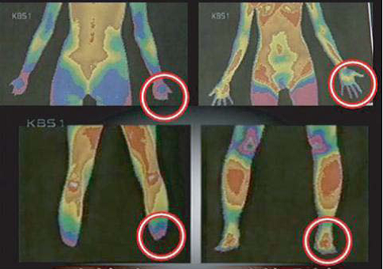
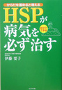
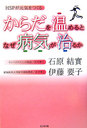

特点和使用方法

享用波士维纳温疗仓，不用更衣，也没有收拾浴缸放水等麻烦事项，不用担心入浴期间水温会下降，更不用担心浴缸不干净，水里有传染病菌。可谓安全方便易行。
享用波士维纳温疗仓，只需穿着日常服装，坐到仓椅里。打开开关后，“生命光波—红外线”很快缓缓地渗入身体，并保持恒温，温柔体贴，不会对心脏，血管带来负担，老人，心血管病患者也可以安心使用。
享用时，最好饮用茶，矿泉水等无酒精饮料，可以一边听凭“生命光波”的呵护，一边聊天，看报看电视，也可以办理公务。
波士维纳温疗仓的温度选择：波士维纳温疗仓提供温暖温度（38℃～45℃）、根据人体的具体状态，选择最适合自己的理疗温度。一般老人，身体虚弱者，即身体的虚冷状态比较严重的需要略低点的温度，身体的虚冷状态不太严重的需要略低点的温度。感觉温暖舒适就是最适合自己的温度。所以要根据自己的体感来定温度。
疗效

使用前 使用后
桑拿是用接近100度的高温，加热人体表层，让身体大量出汗，对人体，特别是给心肺造成较大负担，不适合老弱病幼人群，特别是不适合高血压心脏病人的使用。
和高温桑拿不同，波士维纳温疗仓是在温暖温度下，释放出生命光线，使人体从内部缓缓温暖，内脏器官缓缓温暖，即从心里感觉温暖，但几乎不会出汗
因为波士维纳温疗仓发射的远红外线能温和的渗入人体，它所产生的远红外线频率与身体中的细胞分子、原子间的水分子运动频率接近，因此引起共振效应，其能量能被人体吸收，使皮下组织深层部位的温度升高，产生的热效应使水分子活化，处于高能状态，加速人体需要的生物酶的合成，同时活化蛋白质等生物分子，从而增强机体免疫力和生物细胞的组织再生能力，加速供给养分和酵素，促进身体健康。一般需要保持40分钟左右，身体的深层会得到很好的呵护。随着内脏器官缓缓温暖，内脏器官机能恢复，细胞组织重新获得活力，促进淋巴和毛细血管的活动，通过淋巴将身体的毒素废物从尿液里排出。
所以在享受温疗时，最好饮用轻饮料。推荐矿泉水，淡茶，鲜果汁。
波士维纳温疗仓使人体从内部温暖，从而得到修复，可以分解血栓，扩张末梢毛细血管，使营养和氧气传送到血管最末端，使细胞组织重新获得活力，阻止细胞老化。推荐每周享用3~4次，每次30分钟。
1.改善体质

《ＨＳＰ一定能治好病》
伊藤 要子著

《温暖身体为什么能治病》
石原結実/伊藤要子 共著
内部体温上升，血液循坏顺畅，促进HSP（热休克蛋白）的分泌。
HSP的英文全称为：heat shock protein，中文名为热休克蛋白。在40度温水里浸泡20分钟，可以检测出HSP蛋白。享用波士维纳温疗仓（推荐使用时间40分），温热身体内部，获得“HSP效果”，即可以有效修复因感染，外伤，疲劳而造成的细胞损伤，提高身体对外界压力的承受能力，增强免疫系统，并能提高攻击癌细胞能力，提高自身修复能力及免疫力。
坚持经常享用波士维纳温疗仓，可以期待增强自身恢复能力，改善虚冷体质带来的各种不适。
2.美容功效
淋巴的畅通，毛细血管畅通，有效排出体内废物，有效地把营养和氧气输送到血管末梢，身体内部的疏通（内部的美）有效的改善面部血液循环（外部的美），从而改善面部胞豆，毛孔缩小，使皮肤平滑细嫩，健康光彩照人。
在享用波士维纳温疗仓时，同时做面部美容，更会使美容效果倍增。新陈代谢的增加以及脂肪燃烧速率的增加，有很好的美体减肥效果。
3.安神功效
波士维纳温疗仓利用对人体毫无负担的远红外线，温和的改善血液循环，有效地让身心放松，释放出身心积累的压力。并且促进自律神经和荷尔蒙分泌恢复正常，使身心处于轻松状态，达到安神安眠效果。